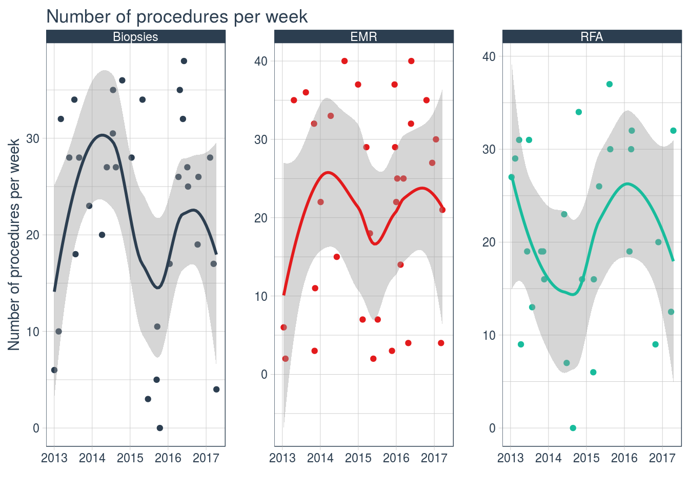

Time series objects deserve a special mention as they can be useful for numerical data and allow the ability to forecast which can be useful for example when determining what the throughput in an outpatient clinic is likely to be so we can plan ahead.
Dataframes can be formatted as time series objects as follows
#Sample dates
dat<-sample(seq(as.Date('2013/01/01'), as.Date('2017/05/01'), by="day"), 100)
rndm1<-sample(seq(0,40),100,replace=T)
rndm2<-sample(seq(0,40),100,replace=T)
rndm3<-sample(seq(0,40),100,replace=T)
df<-data.frame(dat,rndm1,rndm2,rndm3)
library(xts)
Myxts<-xts(df, order.by=df$dat)
kable(head(Myxts,25))| dat | rndm1 | rndm2 | rndm3 |
|---|---|---|---|
| 2013-01-27 | 18 | 21 | 12 |
| 2013-02-02 | 36 | 31 | 10 |
| 2013-03-06 | 22 | 32 | 22 |
| 2013-03-07 | 14 | 25 | 37 |
| 2013-03-10 | 29 | 28 | 34 |
| 2013-03-14 | 8 | 35 | 25 |
| 2013-03-16 | 3 | 27 | 13 |
| 2013-03-24 | 26 | 30 | 28 |
| 2013-03-29 | 15 | 37 | 27 |
| 2013-04-13 | 25 | 31 | 2 |
| 2013-04-25 | 20 | 33 | 31 |
| 2013-06-09 | 27 | 13 | 4 |
| 2013-06-13 | 18 | 23 | 24 |
| 2013-06-28 | 34 | 1 | 40 |
| 2013-08-19 | 4 | 35 | 3 |
| 2013-09-19 | 13 | 0 | 15 |
| 2013-10-02 | 1 | 11 | 27 |
| 2013-10-06 | 7 | 20 | 11 |
| 2013-10-13 | 17 | 38 | 19 |
| 2013-10-24 | 23 | 3 | 21 |
| 2013-11-17 | 17 | 25 | 26 |
| 2013-11-27 | 22 | 4 | 31 |
| 2013-12-08 | 24 | 10 | 19 |
| 2013-12-20 | 36 | 34 | 11 |
| 2013-12-22 | 28 | 7 | 19 |
but what if we have categorical data as well. In this case we have to use another package as follows
library(tidyquant)
library(ggplot2)
library(dplyr)
dat<-sample(seq(as.Date('2013/01/01'), as.Date('2017/05/01'), by="day"), 100)
proc<-sample(c("EMR","RFA","Biopsies"), 100, replace = TRUE)
rndm1<-sample(seq(0,40),100,replace=T)
df<-data.frame(dat,rndm1,rndm2,rndm3,proc)
#Get the table in order so the groups are correct:
df<-df%>%group_by(proc)
mean_tidyverse_downloads_w <- df %>%
tq_transmute(
select = rndm1,
mutate_fun = apply.weekly,
FUN = mean,
na.rm = TRUE,
col_rename = "mean_count"
) ggplot(mean_tidyverse_downloads_w,aes(x = dat, y = mean_count, color = proc)) +
geom_point() +
geom_smooth(method = "loess") +
labs(title = "Number of procedures per week", x = "",
y = "Number of procedures per week") +
facet_wrap(~ proc, ncol = 3, scale = "free_y") +
expand_limits(y = 0) +
scale_color_tq() +
theme_tq() +
theme(legend.position="none")
Of course one of the best things about Time series analysis is the ability to forecast. We can use the aptly named forecast package to do this and an example can be seen here More detail about forecasting can be found here: http://a-little-book-of-r-for-time-series.readthedocs.io/en/latest/index.html including examples in R.